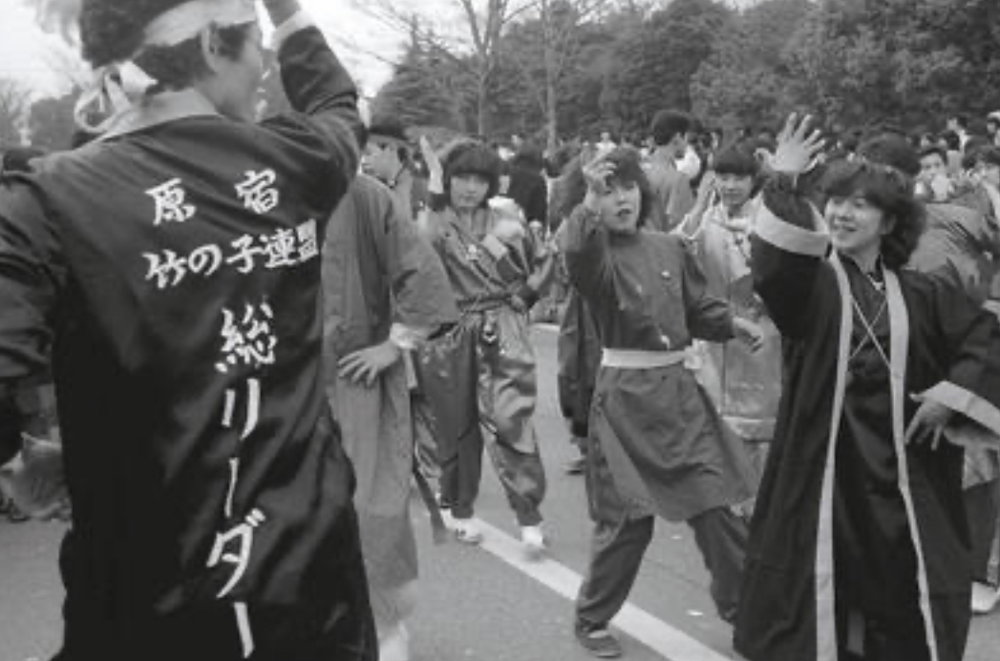
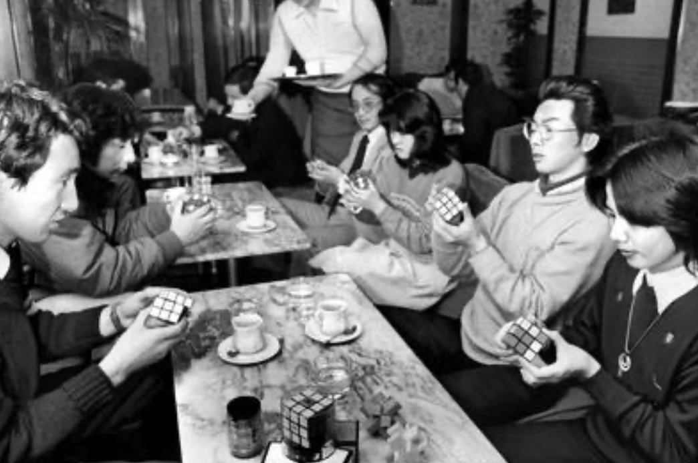
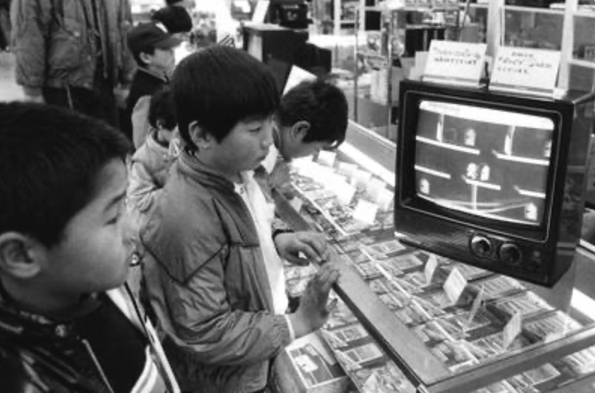
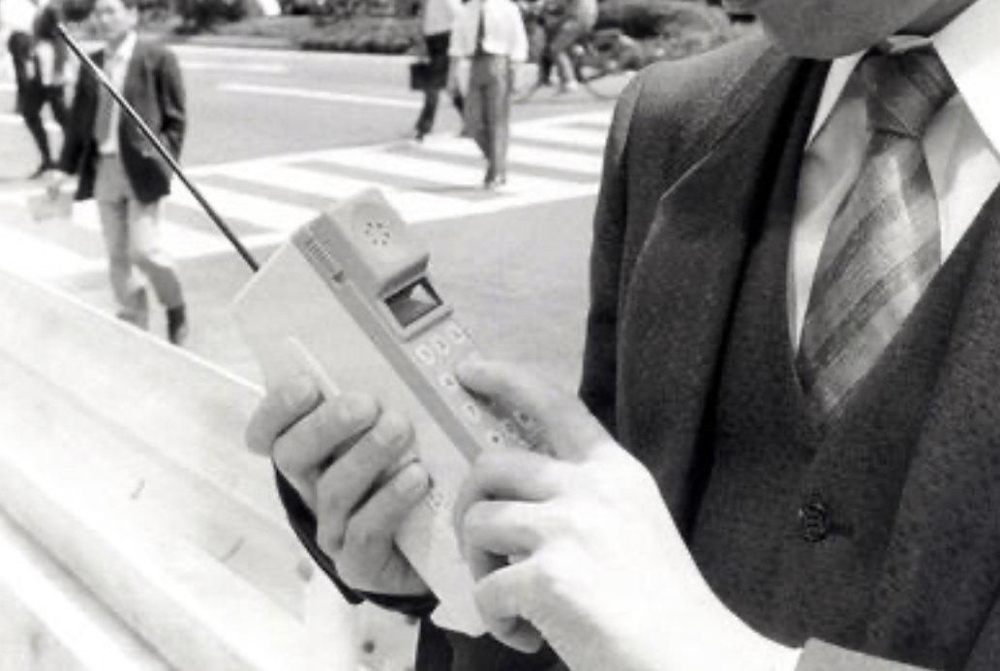
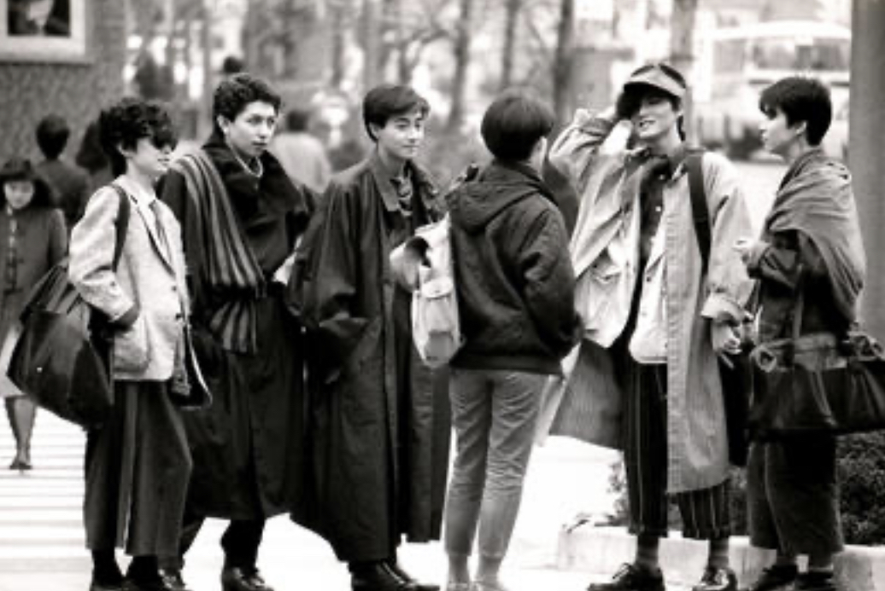
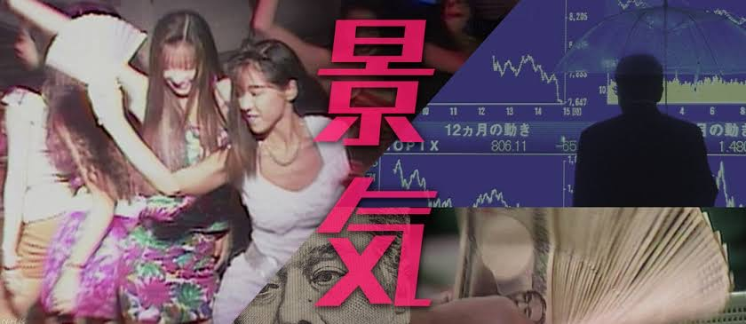
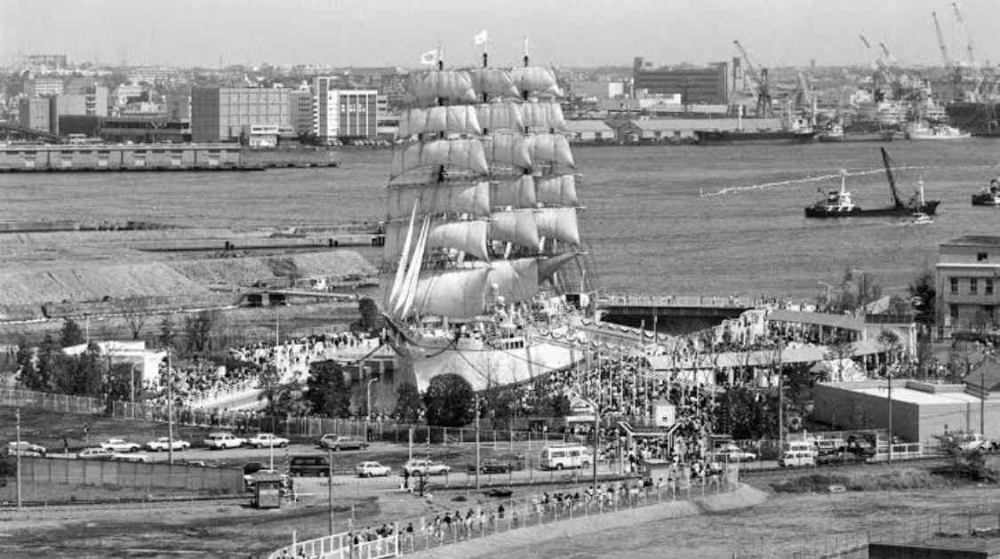
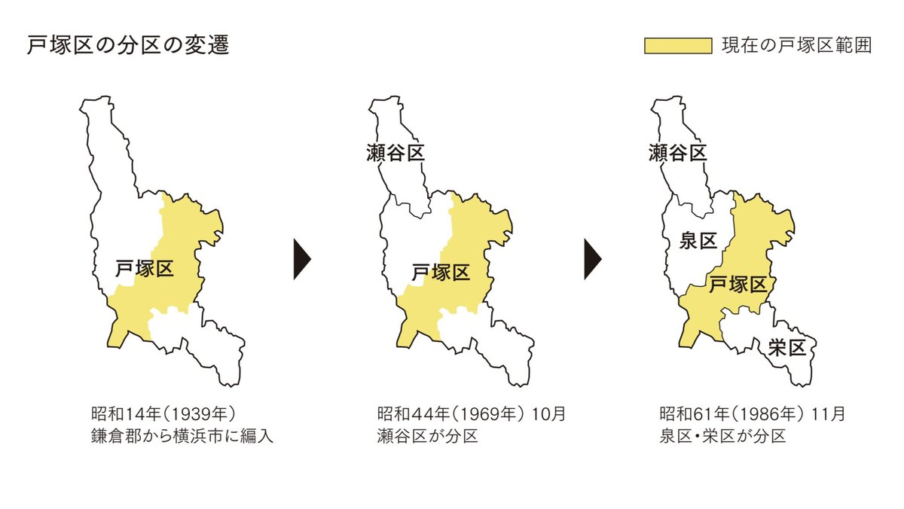
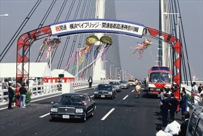
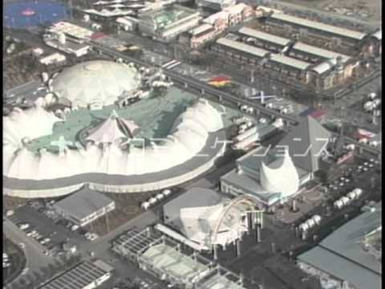

第9回課題
[インタビュー]1980年代用
・1980年竹の子族が流行したそうだが、見たことはあるか。どの様に思ったか。

・1980年代にルービックキューブが流行したが、遊んだことはあるのか。

・1983年に任天堂がファミリーコンピュータ(通称ファミコン)を発売。家族やお友達で遊んだことはあるか。

・ 1987年に日本では携帯電話が普及したそうですが実際に持っていたのかあるいは使用してみたいと思ったか。

・1980年代にDC(デザイナーズキャラクターズ)ブランドの流行があったが、何か持っていた服はあるのか。お気に入りのブランドはあったか。

・バブル景気ではどの様な生活を送っていたか。
今との生活の違いなど。崩壊した時などどんな感じだったのか。

【横浜市民の方へ】
・1985年に帆船「日本丸」が公開されたが、見に行ったか。どんな雰囲気だったのか。

・1986年に戸塚区から栄・泉区が誕生したが、それによる変化などあったのか。

・1989年に横浜ベイブリッジが開通したが、交通便で便利になったと感じたか。

・1989年に横浜博覧会がみなとみらい21地区で開催されたが、行ったことはあるか。どんな雰囲気だったのか。
